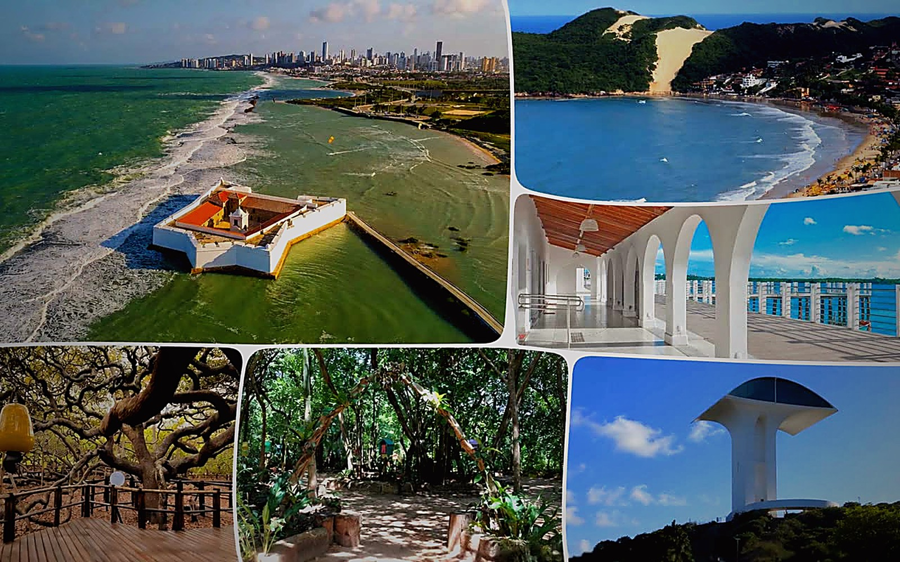
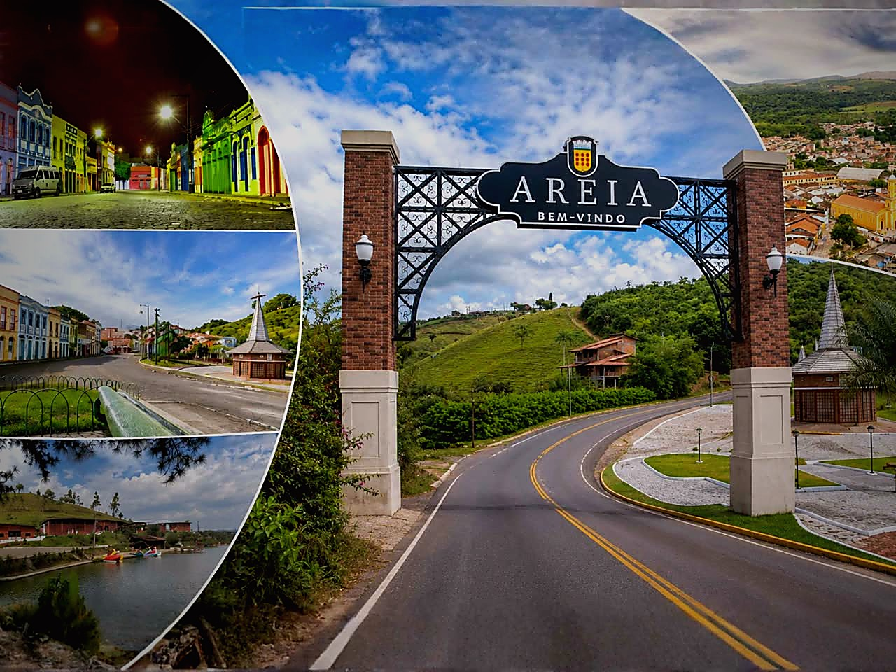
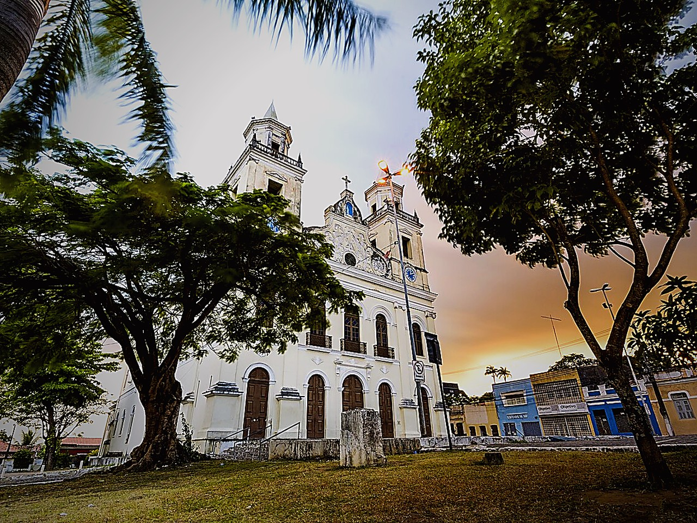
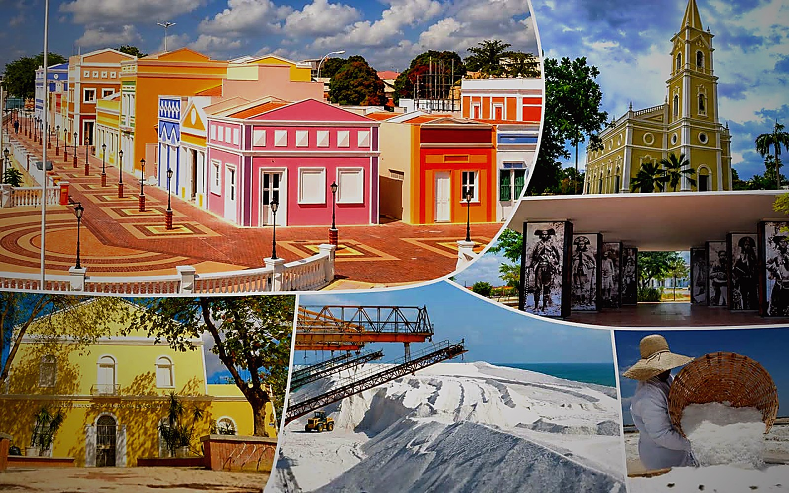
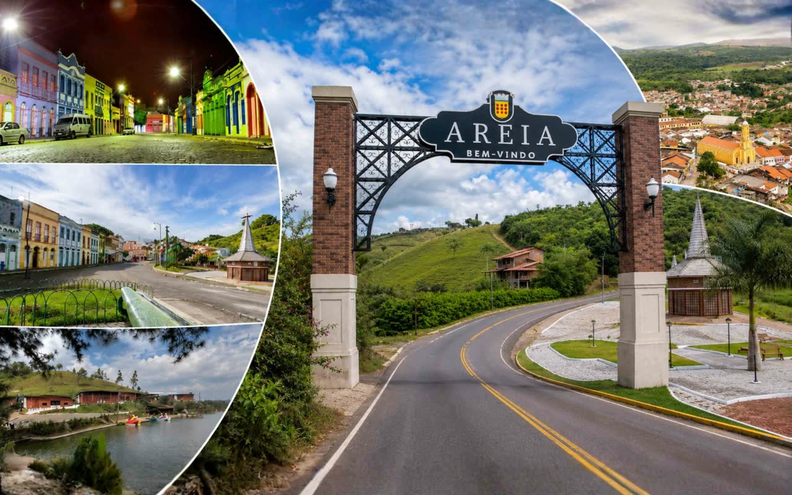

Da sala ao território
O aluno entende diferente quando o conteúdo deixa de ser assunto e vira paisagem, pergunta e evidência.

A Azimute transforma aula fora da sala em Expedição Pedagógica: roteiro com objetivo curricular, operação organizada e material para escola, professores e famílias.
Cada roteiro parte do que a turma precisa aprender. A coordenação recebe argumento pedagógico, não só uma lista de lugares.
Seguro incluso, transporte regulamentado e equipe de apoio. A escola acompanha tudo com previsibilidade.
Diário de campo e eixo de aprendizagem ajudam o professor a preparar, conduzir e retomar a expedição em sala.
Os roteiros entram no calendário semestral de forma coerente com cada etapa escolar e conteúdo em andamento.
O aluno entende diferente quando o conteúdo deixa de ser assunto e vira paisagem, pergunta e evidência.

Regional Interestadual
Interestadual
Interestadual
Regional Regional
RegionalArraste para ver mais →
Entendemos as séries, o que cada turma está estudando e quem precisa aprovar. Calendário só sai depois de mapear.
Um roteiro para cada turma, alinhado com o que cada série está estudando e com a operação que a escola consegue defender.
Roteiro, objetivo pedagógico, comunicação para famílias e segurança operacional aparecem antes da decisão final.

1 dia · Fundamental II e Médio
Transporte · mediação · diário de campo · seguro incluso · BNCC mapeada
"O que me convenceu foi o argumento pedagógico. A coordenação conseguiu enxergar o objetivo da saída antes de falar de logística."
"Meu receio era a responsabilidade fora da escola. A comunicação foi clara e os responsáveis receberam roteiro, horários e orientação."
"Os alunos voltaram usando o território como argumento em sala. Isso mudou o jeito como retomamos o conteúdo."
Fale com a gente e monte um calendário com roteiros por série, tema e objetivo curricular. Em 30 minutos, a escola entende o caminho do semestre.
Solicitar Calendário SemestralRespondemos em até 24h · Sem compromisso